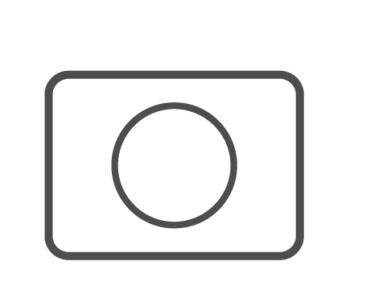
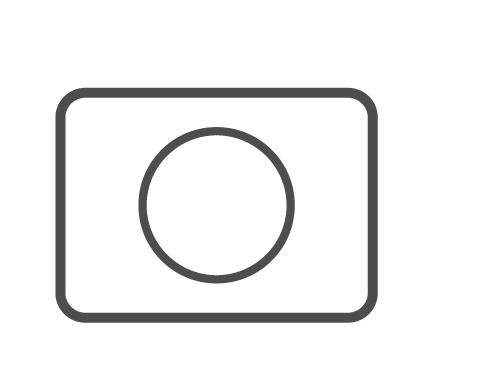
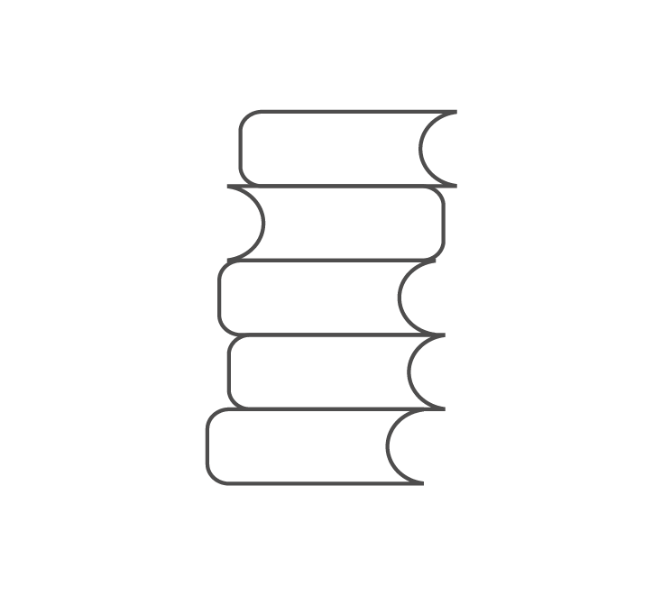
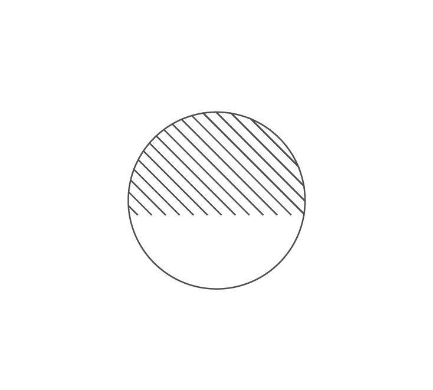
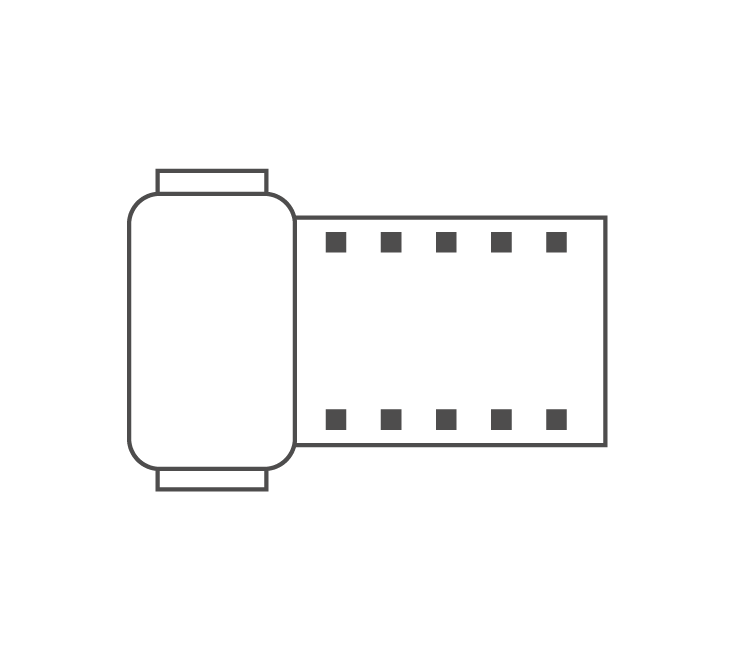
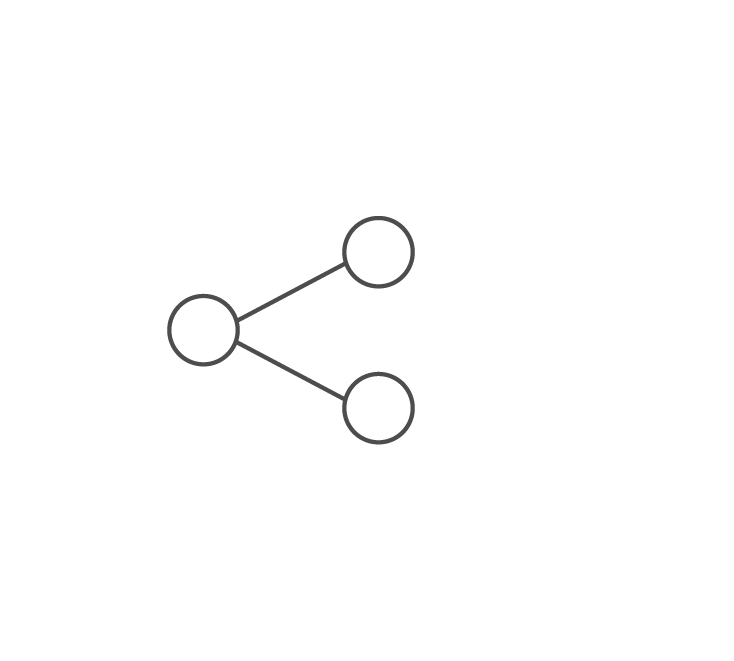

พระองค์ทรงสนพระราชหฤทัย
เกี่ยวกับเทคโนโลยีการถ่ายภาพอย่างมาก
ทรงสะสมตำราการถ่ายภาพเป็นจำนวนมาก
และทรงศึกษาจากตำราเหล่านั้น
ด้วยพระองค์เอง

พระองค์ทรงสนพระราชหฤทัย
เกี่ยวกับเทคโนโลยีการถ่ายภาพอย่างมาก
ทรงสะสมตำราการถ่ายภาพเป็นจำนวนมาก
และทรงศึกษาจากตำราเหล่านั้น
ด้วยพระองค์เอง
ทรงเริ่มคิดค้นหาเทคนิคใหม่ๆ
มาใช้ในการถ่ายภาพอย่างเสมอ
อาทิอย่างเช่น ทรงเคยนำแว่นกรองแสง
ชนิดพิเศษติดหน้าเลนส์
ลักษณะของแว่นกรองแสงเป็นแผ่นใส
ส่วนบนเป็นสีฟ้า ส่วนล่างเป็นสีแสด
เมื่อถ่ายภาพผลที่ได้ คือ ส่วนล่าง
เป็นสีธรรมชาติ ส่วนบนจะได้สีฟ้า
พระองค์ทรงเคยใช้แว่นกรองแสงนี้ทดลองฉาย
พระฉายาลักษณ์สมเด็จพระนางเจ้าฯพระบรมราชินีนาถ
ณ พระตำหนักจิตรลดารโหฐาน
ทำให้สีของสิ่งต่าง ๆ ในภาพ
เป็นสีสอดคล้องสัมพันธ์เข้าเป็นสีชุดเดียวกัน
พระองค์ทรงประดิษฐ์แว่นกรองพิเศษนี้ในขณะนั้น
ยังไม่มีบริษัทใดผลิตแว่นกรองแสง
เพื่อใช้ในการถ่ายภาพมาก่อน


พระองค์ยังทรงเชี่ยวชาญกระบวนการในห้องมืด
เช่น การล้างฟิล์ม การอัดขยายภาพทั้งขาวดำและสี
ทรงเคยจัดทำห้องมืดที่ชั้นล่างสถานีวิทยุอ.ส.
เพื่อสำหรับล้างฟิล์มและขยายภาพสี
โดยใช้เครื่องล้างและเครื่องขยายภาพสีอัตโนมัติ
แบบที่ใช้ในห้องปฏิบัติการมาตรฐานทั่วไป
พระองค์ทรงรู้เรื่องทฤษฎีสีเป็นอย่างดี
ทรงศึกษาการควบคุมเครื่องล้าง
และเครื่องขยายภาพสีอัตโนมัติ
จนสามารถอัดขยายภาพสี
และแก้สีภาพได้ด้วยพระองค์เอง
ด้วยความสนพระราชหฤทัยในเรื่องการถ่ายภาพ
และพระปรีชาสามารถในการถ่ายภาพนี้
ประกอบกับมีพระราชประสงค์จะทรงใช้ประโยชน์
จากภาพถ่ายอย่างกว้างขวาง
พระองค์จึงทรงพระกรุณาโปรดเกล้าฯ
จัดตั้งส่วนช่างภาพส่วนพระองค์ขึ้นในสำนักพระราชวัง
เพื่อทำหน้าที่บันทึกภาพล้างอัดขยายภาพ
อนุรักษ์ภาพและให้บริการภาพแก่ผู้ที่มาติดต่อ
เพื่อขอไปใช้ประโยชน์ต่าง ๆ ต่อไป

